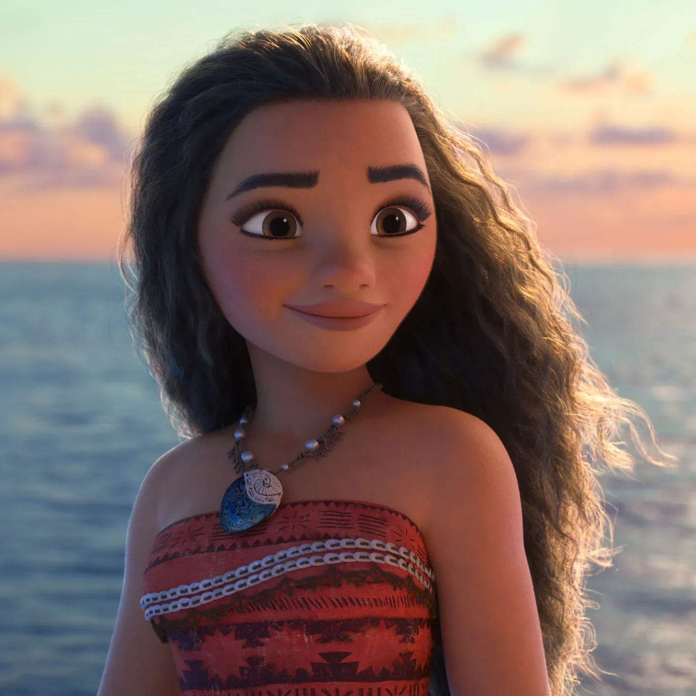

|  |
Moana of MotuniMoana is a strong-willed, independent wayfinder. Though she has moments of self-doubt, she has great pride in who she is and where she comes from, and doesn't back away from new challenges.Moana, the strong-willed daughter of a chief of a coastal village, who is chosen by the ocean itself to reunite a mystical relic with the goddess Te Fiti. |
| Home | Family | Friends | Goals | Songs | Movies |
Family
|